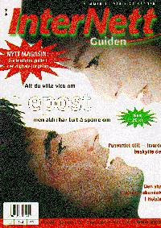

Oppdatert: 21. desember 1995 kl. 15:02
Laber debut for norsk nettmagasin
Det glansede magasinet Internett Guiden som har première i Narvesen-kioskene i disse dager, er fremfor alt et tilbud for dem som ikke kan lese engelsk. Svært lite av innholdet handler om Internettet i Norge.

Det er forfatter og popkultur-journalist Torgrim Eggen som er redaktør for den norske utgaven av Internett Guiden. Magasinet har en stund vært på markedet i Sverige og Finland. Første utgave som nå skal være ute på markedet, skjemmes ved første øyekast av språklig rot. En oversettelse fra den svenske utgaven har ført til at språket alt for mange steder har blitt "Svorsk". Med Bonnier Publications i ryggen, burde det være mulig å gi Eggen hjelp med oversettelsesarbeidet. Men det er ikke bare språket som gjør at førsteinntykket av Internett Guiden er skuffende. Det minste leserne kan forvente av et nettmagasin på Norsk, er at det inneholder nyheter, rykter og trender rundt Internett-miljøet i Norge. Skuffelsen er derfor stor når det viser seg at fire notiser, en norsk web-ti-på-topp-liste, og en oversikt over norske nettleverandører er det eneste stoffet som er spesiallaget for den norske utgaven. Eggen søker riktignok etter frilansere over en helsides annonse side om side med en helsides egenreklame for hans siste bok "Hilal". Vi får håpe situasjonen blir bedre med mer mannskap.
Det er ingen tvil om at det er etterspørsel i markedet etter et norsk Internettmagasin. Det grunnleggende problemet Internett Guiden må jobbe med er derfor å skille seg ut fra flommen av engelske og amerikanske nettmagasiner. Foreløpig er bladet en blek kopi som ikke kommer opp på nivå med det andre som i dag finnes på markedet. Dagsavisene dekker den norske Internett-verden bedre en Internett Guiden klarer i sitt debut-nummer.
JAN THORESEN
[Innhold] [Info] [Aftenposten hjemmeside] [Kultur/Underholdning hovedside]